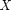
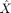
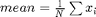
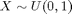
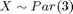
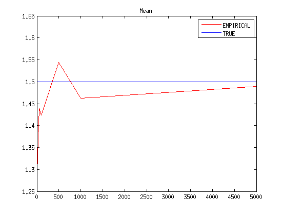

Expectation and Sample Mean
For a certain distribution , we know the expectation. If we get a sample of , which we call it , we are also able to calculate the empirical average or mean of the sample, .
Contents
What's the relationship between empirical mean and theoretical expectation?
Uniform distribution example
;
alpha1 = 0; beta1 = 1;
Compute THEORETICAL values;
mean1 = (beta1 - alpha1) / 2;
Compute empirical values;
sizes = [5,10,50,100,500,1000,5000]; % For different sampling sizes; nS = length(sizes); mean2 = zeros(nS,1); variance2 = zeros(nS,1); for sizeIndex = 1:nS aSize = sizes(sizeIndex); ys = unifrnd(alpha1, beta1,[aSize,1]); mean2(sizeIndex) = mean(ys); variance2(sizeIndex) = var(ys); end fig1a = figure; xlim([min(sizes) max(sizes)]); ylim([0, max(mean2)]); plot(sizes,mean2, '-r'); hold on; plot(sizes,repmat(mean1,1,nS),'-b'); legend('EMPIRICAL','THEORETICAL'); title('Mean');

Pareto distribution example
Let's do the same for ;
alpha1 = 3; k1 = 1/alpha1; sigma1 = 1/alpha1; theta1 = 1;
Compute THEORETICAL values;
mean1 = alpha1/ ( alpha1 - 1);
Compute empirical values;
rep = 100; sizes = [5,10,50,100,500,1000,5000]; nS = length(sizes); mean2 = zeros(nS,1); for sizeIndex = 1:nS aSize = sizes(sizeIndex); aMean = 0; ys = gprnd(k1,sigma1,theta1,[aSize,1]); mean2(sizeIndex) = mean(ys); variance2(sizeIndex) = var(ys); end fig1a = figure; xlim([min(sizes) max(sizes)]); ylim([0, max(mean2)]); plot(sizes,mean2, '-r'); hold on; plot(sizes,repmat(mean1,1,nS),'-b'); legend('EMPIRICAL','TRUE'); title('Mean');